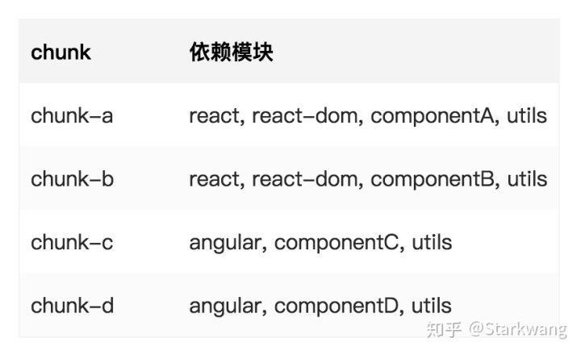
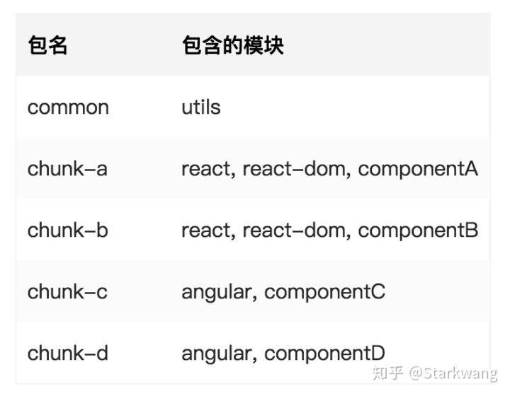
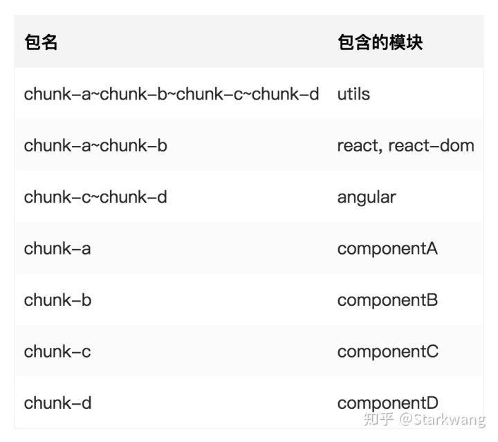

# 前言
起因是因为一个基于 vue-cli3.0 的项目突然反馈 vendor 包过大，为了减少用户的白屏时间开始做优化。
# webpack4 的 splitChunk 插件
用过 vue-cli3.0 的同学应该熟悉，其舍弃了以前常用的 build 文件夹下的 webpack.config.js 文件配置，配置内容全部放到 vue.config.js 文件中，实际上关于 webpack 的配置其实和之前大同小异。打包拆分不得不聊到常用的 CommonsChunkPlugin 。
旧项目常用的方式就是通过 webpack.optimize.CommonsChunkPlugin(opts) ，加载该插件进行代码分割。但是其存在很多问题：
- 它可能导致下载更多的超过我们使用的代码
- 它在异步 chunks 中是低效的
- 配置繁琐，很难使用
- 难以被理解
在 webpack4 抛弃了 CommonsChunkPlugin ，换成了更先进的 SplitChunksPlugin 。它们的区别就在于， CommonChunksPlugin 会找到多数模块中都共有的东西，并且把它提取出来（common.js），也就意味着如果你加载了 common.js，那么里面可能会存在一些当前模块不需要的东西。
而 SplitChunksPlugin 采用了完全不同的 heuristics 方法，它会根据模块之间的依赖关系，自动打包出很多很多（而不是单个）通用模块，可以保证加载进来的代码一定是会被依赖到的。
下面是一个简单的例子，假设我们有 4 个 chunk，分别依赖了以下模块：

根据 CommonChunksPlugin 的默认配置，会打包成：

而 SplitChunksPlugin 会打包成：

显然进一步优化了空间。
当然这不是本次讨论的重点，因为 vue-cli3.0 默认情况下已经是使用了 SplitChunksPlugin 的配置，查看 vue-cli service config 文件夹下的 app.js，有一段链式的 webpackConfig 配置了最终打包的 chunks 配置。
1 | if (isProd && !process.env.CYPRESS_ENV) { |
通常该默认情况可以满足大部分应用场景，但是考虑我们项目的特殊性，我需要额外提高 chunk-vendors 的 minChunks 项，让一些偶尔出现但是频率没有太高的依赖滚出 vendors。
# 动态懒加载
先来聊聊 import 和 require 的区别。
require/exports 出生在野生规范当中，什么叫做野生规范？即这些规范是 JavaScript 社区中的开发者自己草拟的规则，得到了大家的承认或者广泛的应用。比如 CommonJS、AMD、CMD 等等。
import/export 则是名门正派。TC39 制定的新的 ECMAScript 版本，即 ES6（ES2015）中包含进来。
const PAGE_A = require.ensure([], () => {require("a")} 。早期写 vue-router，习惯以这种形式去完成异步加载。后续日常开发中，常用的就是 import from 来引入资源（千万避免全局引入 ui 组件，可能会导致资源包异常的大）webpack 官方就指出，应该用 import 来代替 require.ensure
1 | function determineDate() { |
相比较而言，import 使用了 promise 的封装，只接受一个参数，就是引用包的地址，语法十分简单。
由于 webpack 需要将所有 import () 的模块都进行单独打包，所以在工程打包阶段，webpack 会进行依赖收集。webpack 会找到所有 import () 的调用，将传入的参数处理成一个正则，如：
1 | import('./app'+path+'/util') => /^\.\/app.*\/util$/ |
也就是说，import 参数中的所有变量，都会被替换为【.*】，而 webpack 就根据这个正则，查找所有符合条件的包，将其作为 package 进行打包。
所以 import 的正确姿势，应该是尽可能静态化表达包所处的路径，最小化变量控制的区域。
如我们要引用一堆页面组件，可以使用 import('./pages/'+ComponentName) ，这样就可以实现引用的封装，同时也避免打包多余的内容。但是 webpack 会保证该路径下所有可能引入的文件是可用的，即会预请求。
官方指出，在 import 内部添加注释，可以完成 chunkname 命名、打包模式等功能。4.6 + 还支持 Prefetching/Preloading 来提前加载 / 预加载资源。（prefetch 用于未来会发生的场合，preload 用于当前场合）
1 | import( |
的确是可以完美取代 require 了
# 分析结果
借助 webpack-bundle-analyzer ，可以清晰的查看，打包后之后项目的文件大小以及其构成。对于做性能优化有很大的帮助。具体使用方法不再详述，建议直接移步官方文档。
# 心得
其实大部分是关于 webpack 的使用方式。老的 require.ensure 也好，新的 import 也好，其实本质还是交给 webpack 去打包处理，在最后选择如何去引入。
重要的是 webpack 的配置，即便用了 vue-cli3.0 依然要考虑自定义配置如何去完成，再细化一点就是 import 的引入方式。
# 参考
一步一步的了解 webpack4 的 splitChunk 插件
require 和 import 的区别
webpack import () 动态加载模块踩坑
webpack-bundle-analyzer
原文地址 https://www.jianshu.com/p/54015bf76047